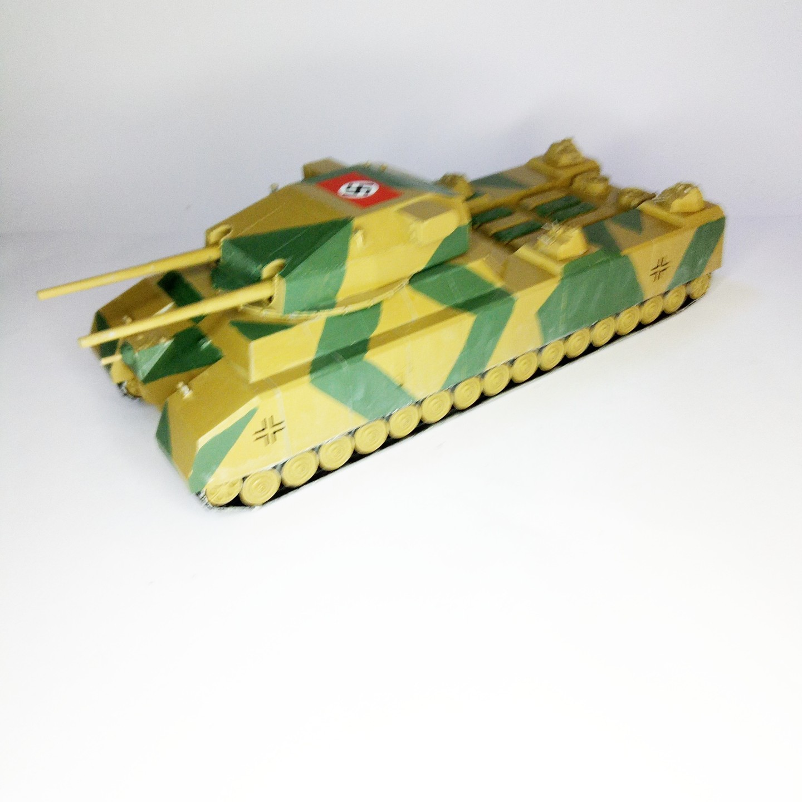

Mezzi militari · scale model archive
Landkreuzer Ratte
Landkreuzer Ratte — Kit: Takom, Scale: 1/144. Hilarious project of a gigantic tank, carrying a cruiser ship gun turret #1/144 #Takom

Photo gallery
English description
Hilarious project of a gigantic tank, carrying a cruiser ship gun turret
#1/144 #Takom
Descrizione italiana
Hilarious progetto di una gigantic autoro, autorying una cruiser nave gun turret.